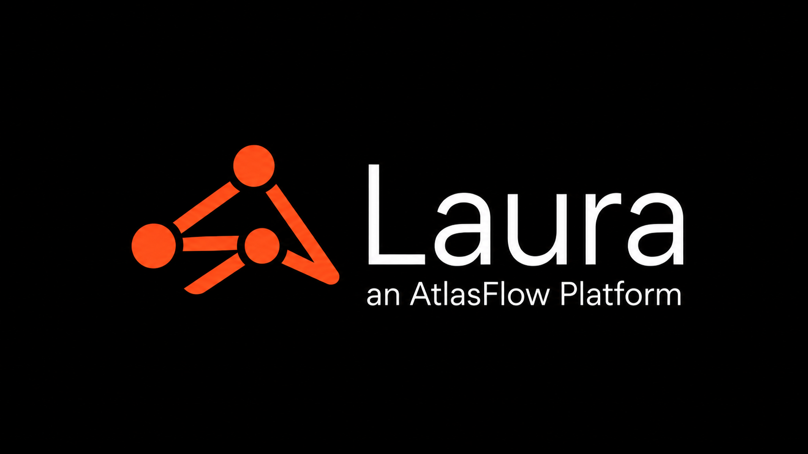

Clarify Operational Complexity
Turn messy inputs, handoffs, exceptions, and decisions into structured workflows.
AtlasFlow designs AI-assisted workflows, working prototypes, and decision-support systems that help teams see what changed, what is at risk, and what to do next.
AtlasFlow is not a generic automation agency. It is a working practice for making complex work visible, testable, and easier to improve.
Turn messy inputs, handoffs, exceptions, and decisions into structured workflows.
Use automation and AI to summarize, classify, prioritize, and recommend next actions.
Make the work visible through customer-facing views, prototypes, and dashboards.
The working practice inside AtlasFlow where messy operational ideas become visible, testable, AI-assisted workflows.
Arc, Cal, and Laura are studio work examples. They demonstrate how the AtlasFlow method applies to real operational problems.

The work is not about software for its own sake. It is about reducing operational noise and making decision pressure visible.
Interested in turning an operational workflow into a testable AI-assisted prototype?